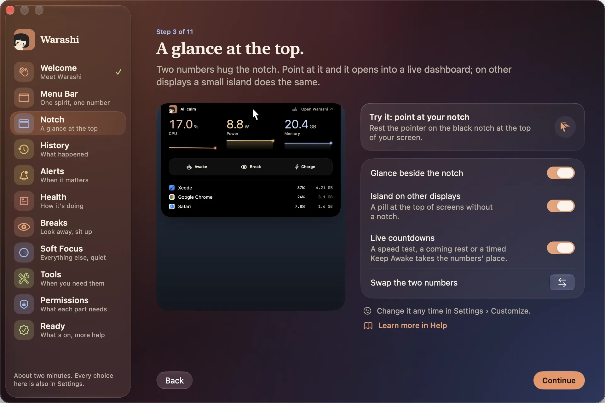

Przy pierwszym uruchomieniu Warashi pokazuje krótką prezentację. Każdy rozdział ma ten sam układ, więc uczysz się go raz: funkcja na żywo po lewej, a po prawej to, co robi, jedna rzecz do wypróbowania na prawdziwym ustawieniu, a na dole uprawnienie, którego potrzebuje, z wyjaśnieniem i jednym przyciskiem. Rozdział, który niczego nie potrzebuje, mówi o tym wprost. Kropki u góry to rozdziały: kliknij dowolną albo użyj ← i →. Całość trwa około dwóch minut i możesz pominąć wszystko: każdy wybór jest też w Ustawieniach.
- Witaj
Czym jest Warashi i trzy obietnice: Twoja historia zostaje na tym Macu, Warashi prosi o coś tylko wtedy, gdy funkcja tego potrzebuje, i nie ma konta. Anonimowe statystyki użycia pomagają ulepszać Warashi; nigdy nie obejmują Twoich aplikacji, plików ani historii. Kliknij Oprowadź mnie.

Witaj. - Pasek menu
Wybierz, co ma być obok duszka: liczba albo bateria narysowana do swojego poziomu. Potem kliknij duszka na pasku menu i wskaż wycięcie: każda z tych rzeczy zostanie odhaczona, gdy ją zrobisz. Uprawnienie: Otwieraj przy logowaniu, żeby zapis nie miał luk.

Pasek menu i Otwieraj przy logowaniu. - Historia
Przykładowy dzień w Dzienniku pokładowym i jak kliknąć dowolny moment w Historii. Włącz Zapisuj aplikację na pierwszym planie, aby zobaczyć, ile czasu spędzasz w każdej aplikacji. Nie wymaga uprawnień: zapisuje tylko, która aplikacja jest na wierzchu, bez nagrywania ekranu, tytułów okien, stron internetowych ani naciśnięć klawiszy.

Historia. - Alerty
Trzy proponowane alerty. Uprawnienie: Powiadomienia. Włącz alert albo naciśnij Zezwól, a macOS zapyta raz; potem Wyślij próbne pokaże, jak wygląda alert. Jeśli powiadomienia dla Warashi są wyłączone, rozdział podpowie, gdzie je włączyć.

Alerty i powiadomienia. - Miejsce na dysku
Cały dysk jako jeden pierścień oraz Kosz. Uprawnienie: Pełny dostęp do dysku, dla całego dysku, rozmiaru Kosza i jego opróżniania oraz daty ostatniej kopii Time Machine; tylko nazwy, rozmiary i daty. macOS nie ma do tego przycisku: naciśnij Otwórz Ustawienia i włącz Warashi na liście albo przeciągnij tam ikonę. Rozdział zauważa, gdy tylko to włączysz; jeśli macOS zastosuje zmianę dopiero po ponownym otwarciu Warashi, naciśnij Otwórz ponownie, a prezentacja wróci w to miejsce. Zobacz Miejsce na dysku.

Miejsce na dysku i Pełny dostęp do dysku. - Bateria
Tylko na Macach z baterią. Wskaźnik baterii z zaznaczonym limitem i prawdziwy przełącznik: włącz Zatrzymaj ładowanie na. Uprawnienie: narzędzie systemowe, dla limitów poniżej 80%, rozładowania przy podłączonej ładowarce, pozostawania czuwającym przy zamkniętej klapie i procesów samego macOS w Aplikacjach. Naciśnij Włącz, a potem włącz Warashi w Ustawieniach systemowych › Ogólne › Elementy logowania. Zobacz Bateria i limit ładowania.

Bateria i narzędzie systemowe. - Agenci
Tylko jeśli używasz Claude Code, Codex lub Cursor. Włącz obserwowanie, powiadomienia, gdy agent Cię potrzebuje, i Nie usypiaj, gdy któryś pracuje. Uprawnienie: logowanie Claude Code, tylko po to, by pokazać limit użycia Claude: macOS zapyta raz, czy Warashi może je odczytać; wybierz Zawsze zezwalaj. Zobacz Agenci kodujący.

Agenci kodujący i logowanie Claude Code. - Przerwy
Przerwy, Rozmycie tła (⌃⌥⌘F) i Nie usypiaj na godzinę: każde na wyciągnięcie ręki, jednym przełącznikiem lub przyciskiem. Wypróbuj przerwę i Pokaż Usiądź prosto pokazują wszystko naprawdę. Nie wymaga uprawnień: przerwy sprawdzają tylko, czy mikrofon lub kamera są w użyciu, a Rozmycie tła nigdy nie widzi Twojego ekranu.

Przerwy, Rozmycie tła i Nie usypiaj. - Gotowe
Co jest włączone, na żywo, wraz z miejscem, gdzie to zmienić, oraz Uprawnienia: każde włączone albo odłożone na później, z informacją, co otwiera. Do tego linki do Pomocy, Pytań i Poradników, przydatne skróty, a na końcu Zacznij używać Warashi.

Gotowe.
Gdy coś nie działa
- Kliknięcie duszka lub wskazanie wycięcia nie zostaje odhaczone: upewnij się, że ikona Warashi jest widoczna na pasku menu i że podgląd przy wycięciu jest włączony.
- Wyślij próbne nic nie pokazuje: zezwól Warashi w Ustawieniach systemowych › Powiadomienia.
- Pełny dostęp do dysku nadal pokazuje „Wymaga”: wyłącz i włącz Warashi na liście, a potem naciśnij Otwórz ponownie.
- Narzędzie systemowe czeka: otwórz Ustawienia systemowe › Ogólne › Elementy logowania i włącz Warashi w sekcji Zezwalaj w tle.
- Prezentacja się nie pojawiła: otwórz Warashi z Aplikacji, a potem Ustawienia › Ogólne › Pokaż powitanie ponownie.
Więcej w sekcji Rozwiązywanie problemów lub napisz na adam@warashi.app.